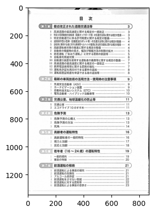

from pathlib import Path
from PIL import Image
import matplotlib.pyplot as plt
import cv2
import numpy as np画像の回転補正をやってみる。
準備
安全運転BOOKの目次のスキャン画像を使います。
(『安全運転BOOK』伊藤印刷株式会社)
img = cv2.imread("sample.jpg", cv2.IMREAD_GRAYSCALE)
plt.imshow(img, cmap='gray')
def rotate_image(img: np.ndarray, d: float, border_value: int = 1, resize=False):
"""
画像を d [度] 回転します。
Args:
img:
d: 回転角度
border_value: 余白を埋める値
resize: True のとき、回転後の画像が欠けないようにサイズ調整をします
False のときはもとのサイズと同じ画像が返ります
"""
height, width = img.shape[:2]
new_width, new_height = width, height
center = (width // 2, height // 2)
M = cv2.getRotationMatrix2D(center, d, 1)
if resize:
cos = np.abs(M[0, 0])
sin = np.abs(M[0, 1])
# 回転後のすべての領域が含まれるサイズを計算
new_width = int(width * cos + height * sin)
new_height = int(width * sin + height * cos)
# 中心ずらし
M[0, 2] += (new_width - width) / 2.0
M[1, 2] += (new_height - height) / 2.0
affine_img = cv2.warpAffine(img,
M,
(new_width, new_height),
borderMode=cv2.BORDER_CONSTANT,
borderValue=border_value)
return affine_img傾けた画像を用意する
img = rotate_image(img,5,255)
plt.imshow(img, cmap='gray')回転補正
以下のサイトの射影ヒストグラムをもとに最も良い「正面度」となる角度を探索し、画像を回転させる。
射影ヒストグラムを用いた文書画像の回転補正 - 社会人研究者が色々頑張るブログ
def projection_histogram(bimg):
"""
射影ヒストグラムの作成
https://nsr-9.hatenablog.jp/entry/2021/08/09/200559
"""
bimg = np.ones_like(bimg) - bimg
out = np.sum(bimg, axis=1)
return out
def to_binary_adavtive_threshold(img: np.ndarray) -> np.ndarray:
"""2値化処理 {0, 1} に変換"""
bimg = cv2.adaptiveThreshold(
img, 255, cv2.ADAPTIVE_THRESH_GAUSSIAN_C, cv2.THRESH_BINARY, 7, 50
)
bimg[bimg == 255] = 1
return bimgbimg=to_binary_adavtive_threshold(img)
hist = projection_histogram(bimg)ヒストグラムの確認
fig = plt.figure(figsize=(10, 6))
gs = fig.add_gridspec(1, 2, width_ratios=[1, 1])
# histgram
ax0 = fig.add_subplot(gs[0])
val = hist[::-1]
x = range(len(val))
ax0.barh(x, val)
ax0.set_ylim(0, len(val))
# image
ax1 = fig.add_subplot(gs[1])
ax1.imshow(bimg, cmap="gray")
ax1.axis("off")
plt.subplots_adjust(wspace=0, left=0, right=1, top=1, bottom=0)
plt.show()def calc_cost(img:np.ndarray,d:float):
img=rotate_image(img,d,border_value=1,resize=True)
hist=projection_histogram(img)
hist=np.where(hist<=1,0,1)
return np.sum(hist)
calc_cost(bimg,0.)1249角度を変えたときのコストの変化を確認する
x=np.linspace(-8., 8, num=80)
vals=[calc_cost(bimg,d) for d in x]min_idx=0
for i in range(len(vals)):
if vals[i]<vals[min_idx]:
min_idx=iprint("コスト最小値となる角度:",x[min_idx])コスト最小値となる角度: -4.962025316455696plt.xlabel('angle')
plt.ylabel('cost')
plt.plot(x, vals, marker='o')
plt.show()探索した良い正面度の角度に補正する
tmp=rotate_image(img,x[min_idx],border_value=255)
fig = plt.figure(figsize=(10, 6))
plt.imshow(tmp, cmap='gray')fig = plt.figure(figsize=(10, 6))
gs = fig.add_gridspec(1, 2, width_ratios=[1, 1])
ax0=fig.add_subplot(gs[0])
ax0.imshow(img, cmap='gray')
ax0.axis('off')
ax1=fig.add_subplot(gs[1])
ax1.imshow(tmp, cmap='gray')
ax1.axis('off')
plt.subplots_adjust(wspace=0, left=0, right=1, top=1, bottom=0)
# 縦線を追加
ax1.axvline(x=0, color='black', linewidth=2)
plt.show()おまけ
ぱっとわからなかった回転後の画像サイズの求め方
Copyright
Copyright tamuraup. 2024. All Rights Reserved